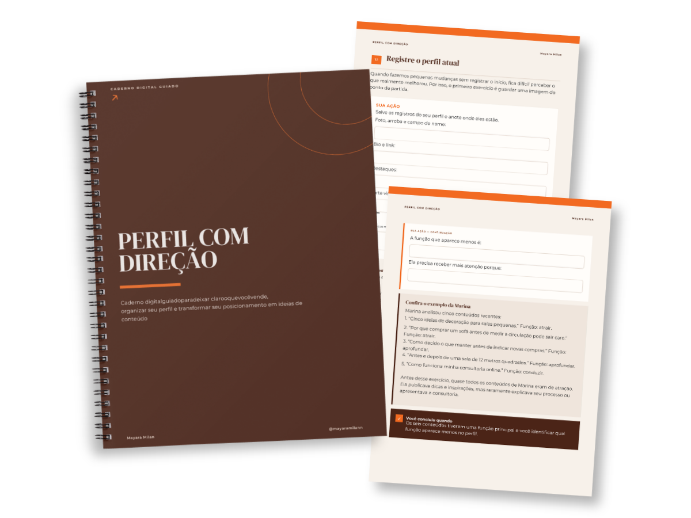
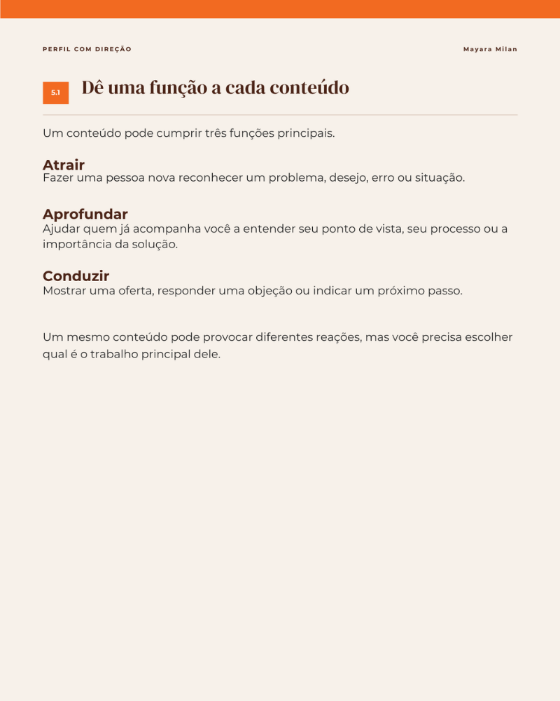
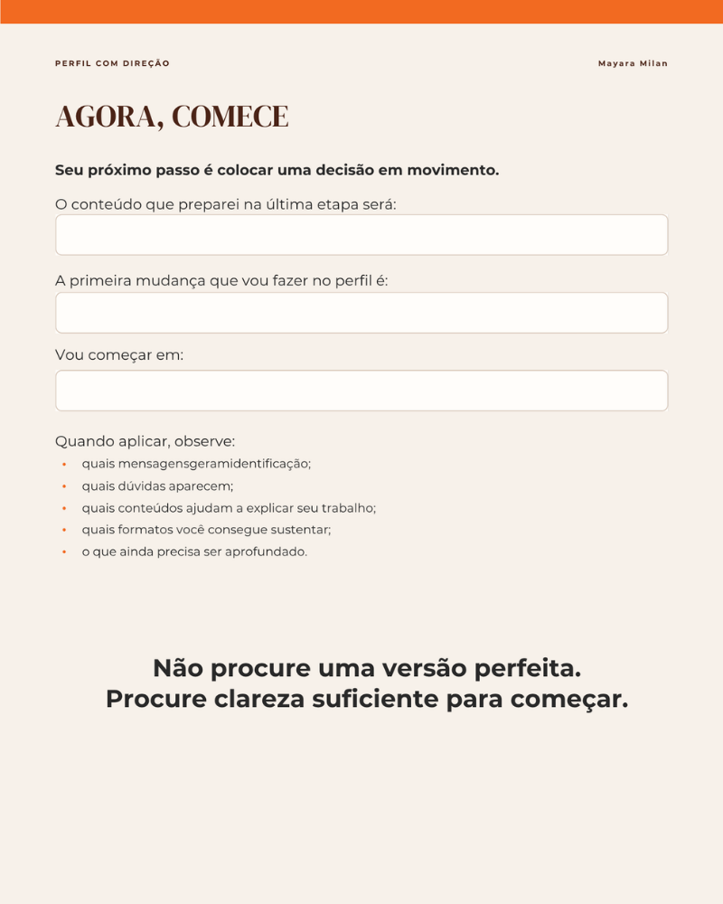

Organize seu perfil e entenda o que comunicar nas redes sociais.
Um caderno digital guiado para empreendedores que querem deixar o perfil mais claro, escolher o que comunicar e criar conteúdo com mais intenção.
Atividades práticas, exemplos preenchidos e prompts de IA para ajudar você durante o processo.
Acesso imediato • Caderno digital em PDF • R$ 19,90

Talvez você:
Tenha dificuldade para explicar o que faz;
Fale de vários assuntos, mas não tenha uma mensagem clara;
Não saiba o que precisa mudar na bio e no conteúdo;
Tenha boas ideias, mas não consiga conectá-las ao que vende.
Analise o que seu perfil comunica hoje e identifique o que está confuso.
Defina a oferta que deseja destacar, para quem ela é e qual diferença precisa ser percebida.
Transforme suas escolhas em uma mensagem mais clara para o perfil.
Ajuste a bio, organize os temas de conteúdo e decida o que precisa comunicar com mais frequência.
Em cada etapa, você encontra:


Você não precisa esperar ter todas as respostas para deixar seu perfil mais claro. O caderno vai conduzir você pelas escolhas que precisam ser feitas.
Você recebe o acesso logo após a confirmação da compra.
Não. É um caderno digital guiado em PDF.
Não. Todas as instruções estão dentro do próprio caderno.
O acesso é enviado após a confirmação da compra direto no seu e-mail.
Não. Os prompts são um apoio opcional.
Sim! O PDF é interativo (preenchível digitalmente no celular, tablet ou computador) e você também pode imprimir se preferir.